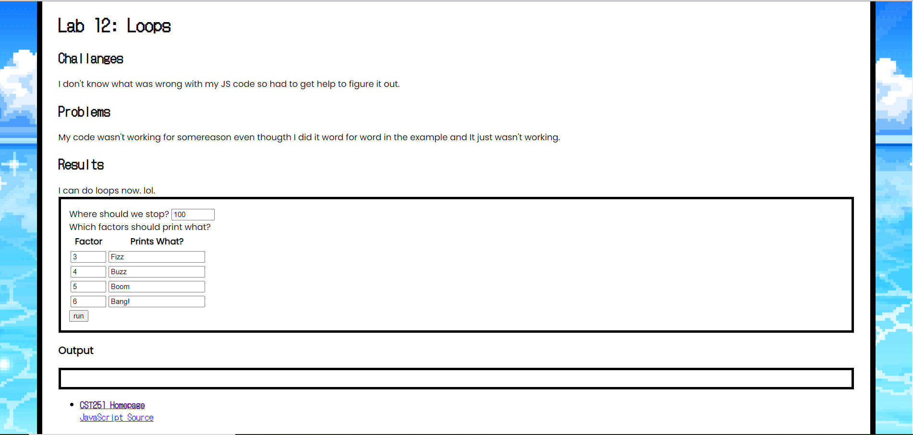
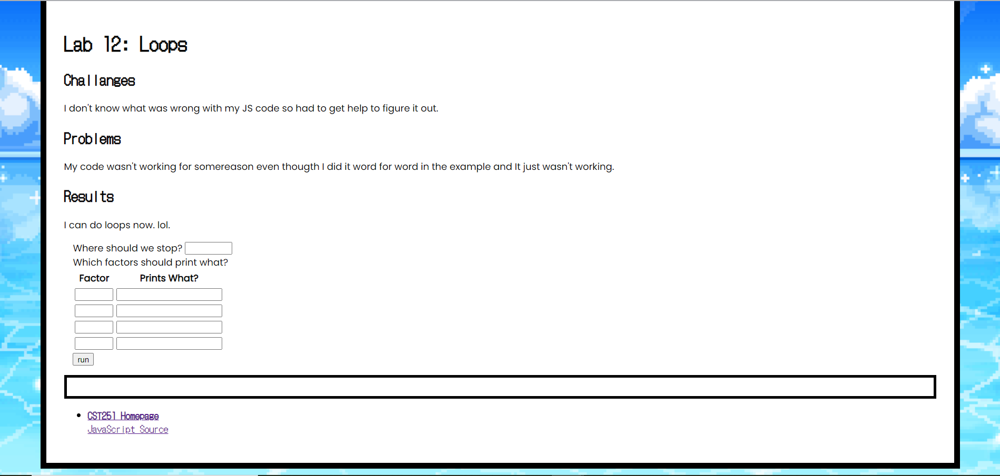

Lab 13: Debug
Challanges
at first I was very confused with this lab, mainly on how I could debug something. As in, I was just confused with the directions. So to de
Problems
I tried to use lab 12 as an example but I just could not get the js to work.
Results
I understand what debugging means and can do it know even if I don't know entirly lol.
For this debugging lab I chose to do Lab 12: Loops because I was't able to make the Javascript completley work.
Debugging

